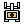
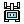

FIELD KIT / TEAM OBJECTIVES / PRODUCED CANDIDATE
Relay anchors
One radio receiver, two connector states. Available has separated jaws; captured closes the link. The game supplies anchor letters, checks and capture boundaries.
Available

Captured

Original integer-pixel artwork, five-colour family, binary transparency, centred pivot. Production candidates remain separate from approved runtime collections. Review both states in Relay Yard and imported multi-stronghold maps before adoption.